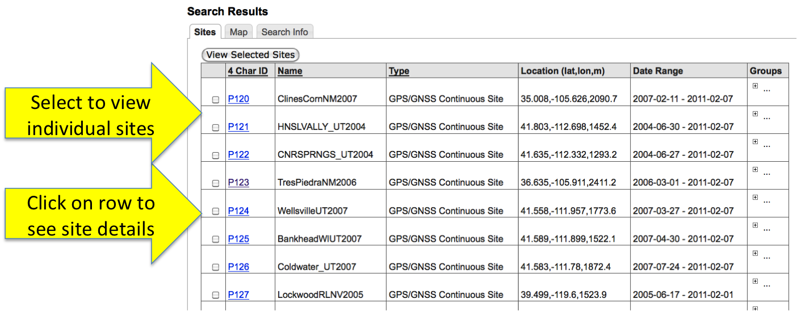
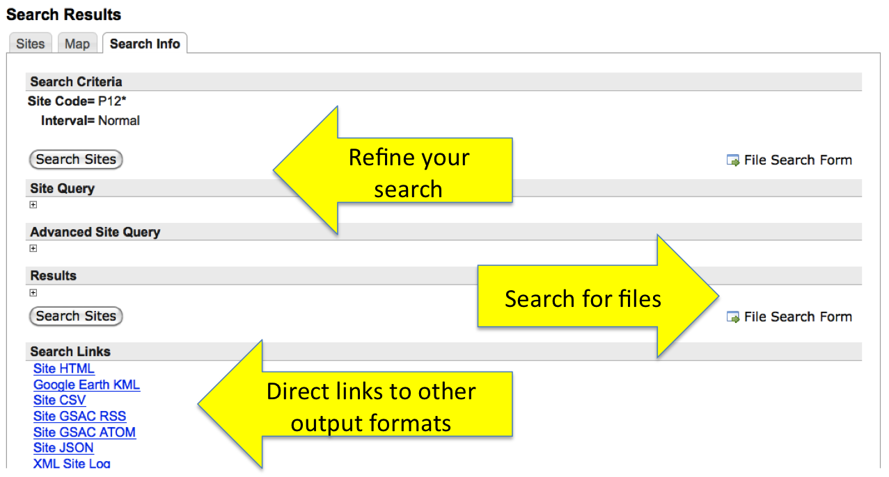

Site Search Results
The site search results lists the sites and allows you to drill down
to view their details by clicking on a row.

Search Info
The "Search Info" tab allows you to refine your site search
or go to the file search form. The "Search Links" section lists your site search but with the other output formats (e.g., Google Earth KML).
